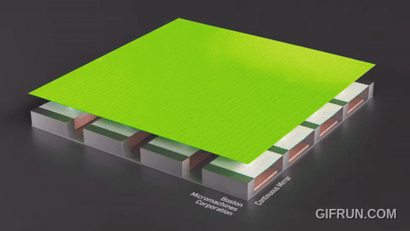

Overview
The Kilo product redesign was a strategic initiative to better productize BMC's deformable mirror technology. This included reanalyzing the component supply line, redesigning the electro-optical system for manufacturability, and improving performance for the end user.
Hardware Redesign Outcomes
Redesigned metal enclosure around the deformable mirror to enable the following:
- Reduced cost by 45%, condensing BOM components and eliminating single-source dependencies.
- Reduced optical size by 55%, improving customer's ease of use.
- Reduced mechanical stress on mirror surface, improving product quality and optical performance.
- Integrated cable strain relief.
- Compatible with standard mounting and alignment features.

What is a Deformable Mirror?
Deformable Mirrors (DMs) are MEMS optics, about the size of a quarter, that contain 100 - 3000 electrostatic actuators changing the surface of the mirror.
This allows them to correct for atmospheric distortion and improve image quality for microscopy, astronomy and laser communication.
They are manufactured using microfabrication and photolithography technologies, similar to semiconductors.

Standardize Product Line Architecture
Standardized cabling, packaging and electronics across product variants (248 - 1024 analog channels), reducing component variability and simplifying manufacturing.
Developed a modular, configurable system design that supports flexible integration into existing hardware ecosystems while maintaining performance and scalability.

Other Roles and Responsibilities
- Managed new product launch. Coordinating strategy, objectives and timeline across R&D,production, and vendors.
- Designed experiments to validate prototypes and product.
- Streamlined production processes by designing automated stations, fixturing and QA testing.